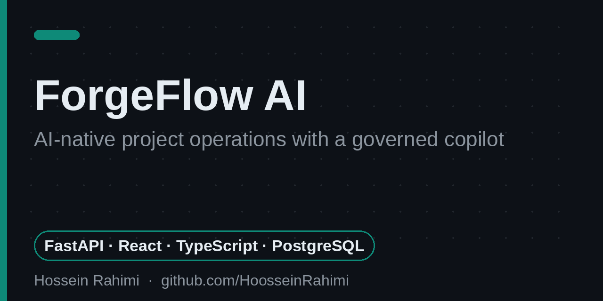
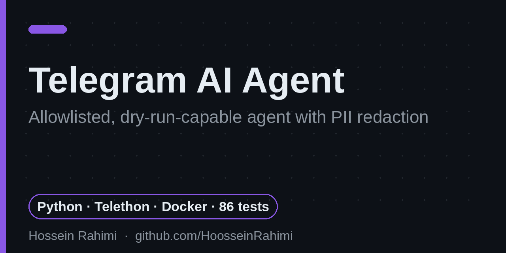
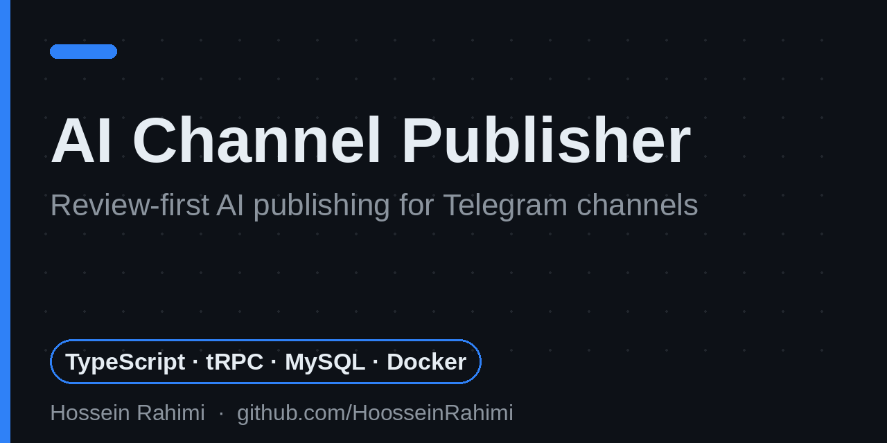
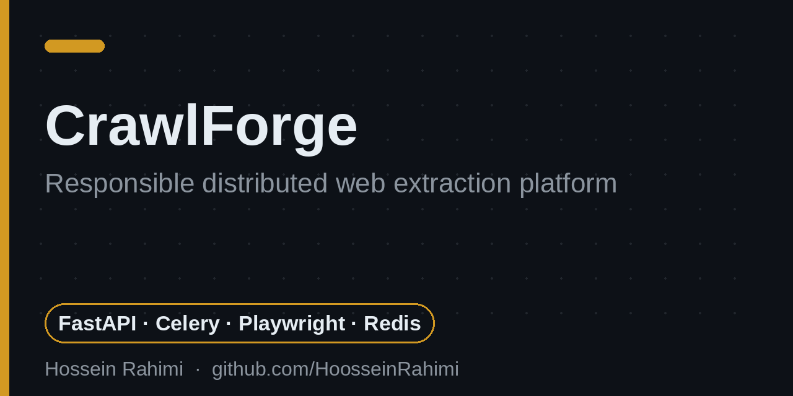
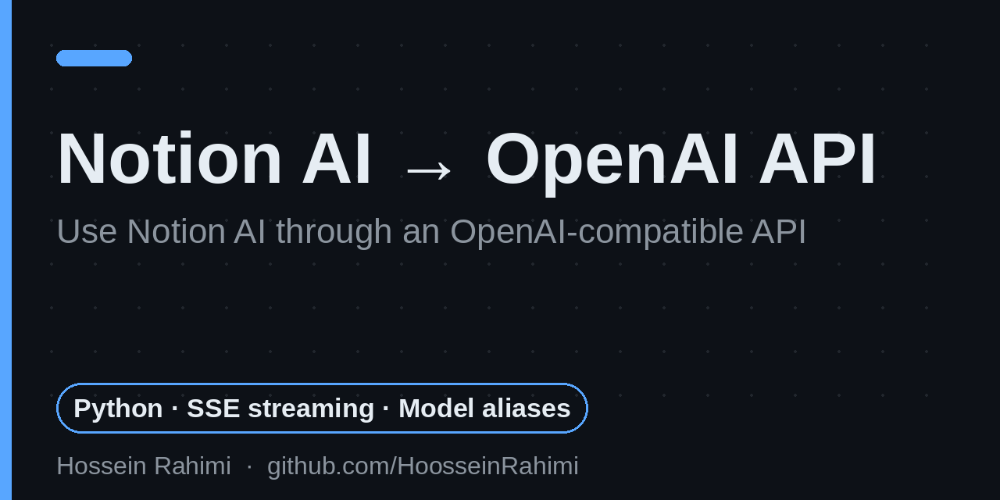
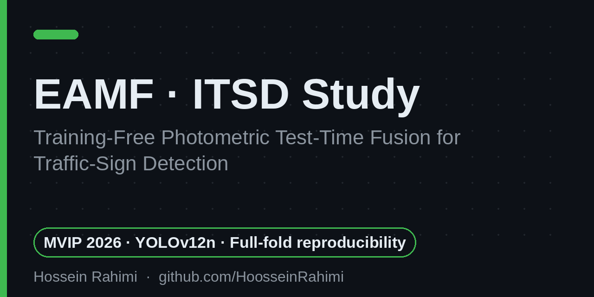

AI Systems & Backend Engineer
Python · FastAPI · TypeScript — governed AI agents, LLM gateways & secure automation
● Based in Tehran — preparing a move to Germany · Open to AI Engineer / Backend roles & research internships (summer 2027)I build production-minded AI systems and developer tools: clear API boundaries, security controls and observability first — build → test → harden → observe → improve → repeat. My work includes a governed AI copilot platform, an OpenAI-compatible LLM gateway, a review-first AI publishing platform, a security-hardened Telegram AI agent and a responsible distributed web-extraction service. In research, I work on computer vision and reproducible ML; my traffic-sign detection study was accepted at MVIP 2026. I am an M.Sc. Computer Science student at Islamic Azad University, Science and Research Branch, Tehran.

AI-native project-operations platform with a governed copilot — propose → approve → execute — and repository intelligence.

Security-hardened Telegram agent with an allowlist, dry-run mode, PII redaction and prompt-injection boundaries. 86 passing tests.

Review-first AI publishing for Telegram channels: drafts, approvals, scheduling, delivery reconciliation and analytics.

Responsible, AI-assisted distributed web extraction — HTTP first, isolated Playwright fallback, SSRF defences, quotas and observability.

OpenAI-compatible gateway for Notion AI with streaming, model aliases and a Responses API endpoint. Maintained continuation — full test suite, CI and security hardening added.

Full-fold, fully reproducible study of training-free photometric test-time fusion for traffic-sign detection on the ITSD benchmark.
Source code and recorded experiments are public in the EAMF repository above.
Persian-language paper on agent-based reference architectures for student services.
On maintaining someone else's code: characterization tests first, then CI, hardening and a new API endpoint. Read on dev.to
My Telegram channel with short English notes on AI tools and computer science for students and junior developers. t.me/CSin3Minutes